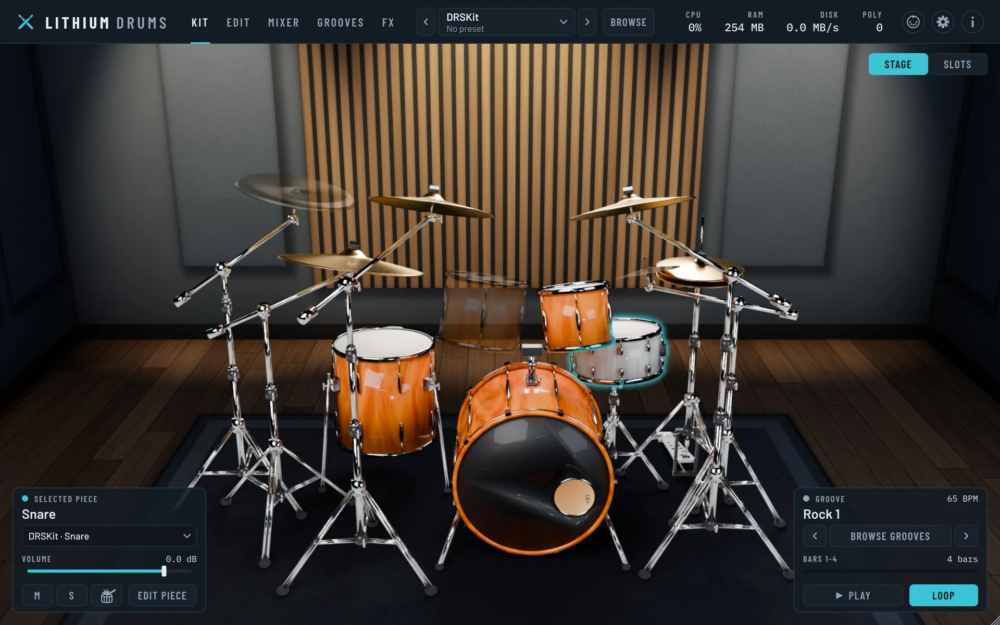
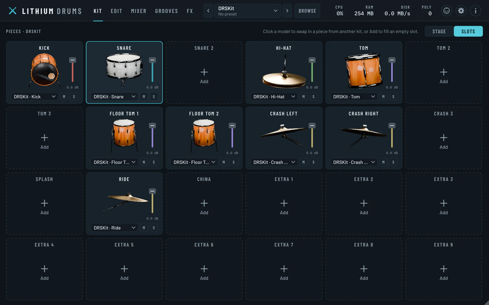
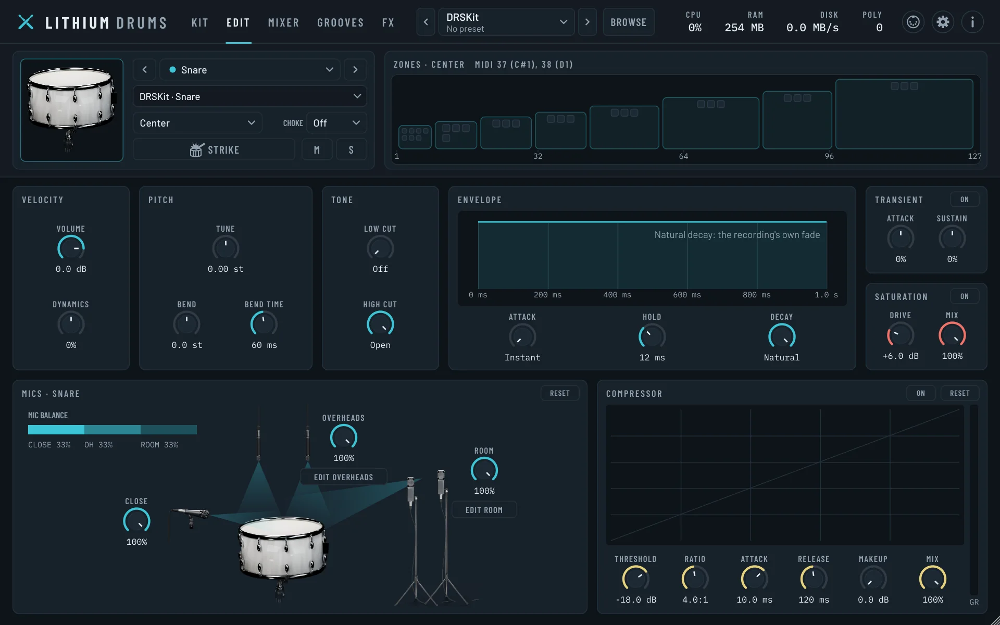
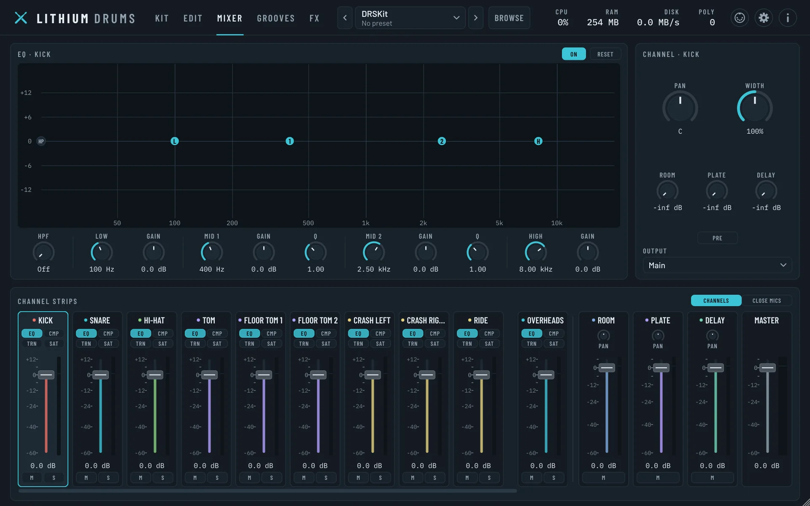
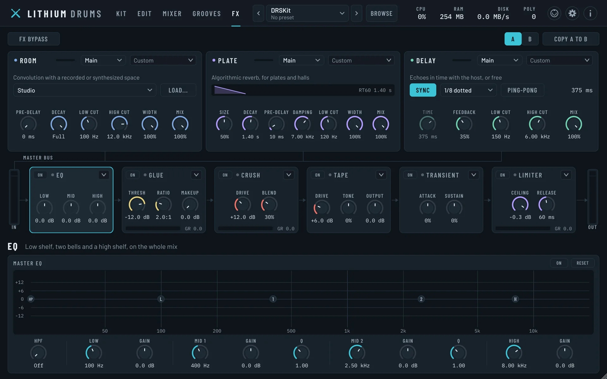
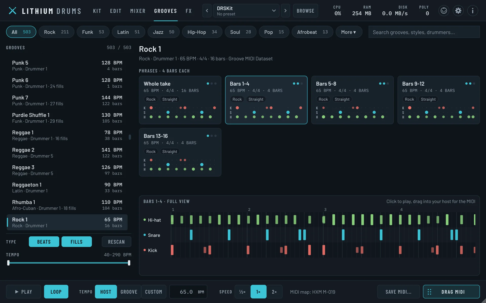
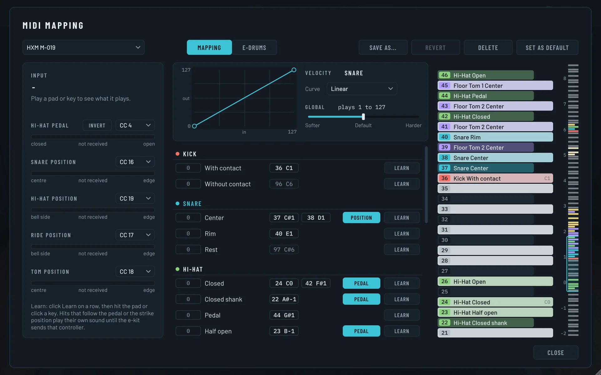
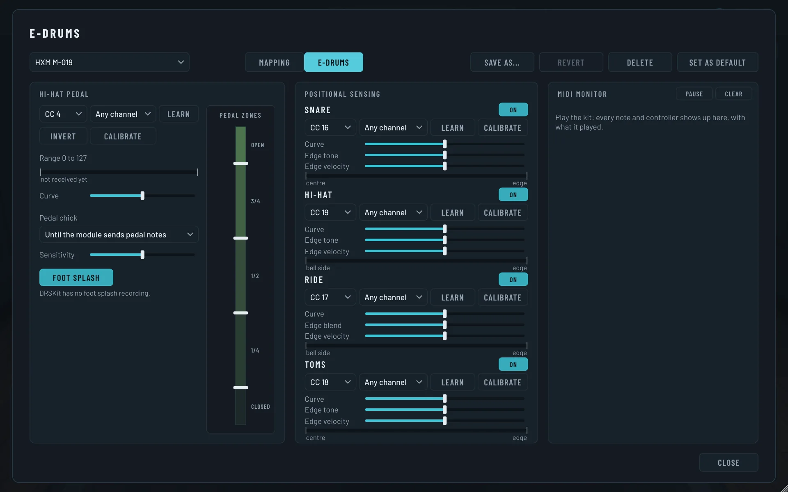
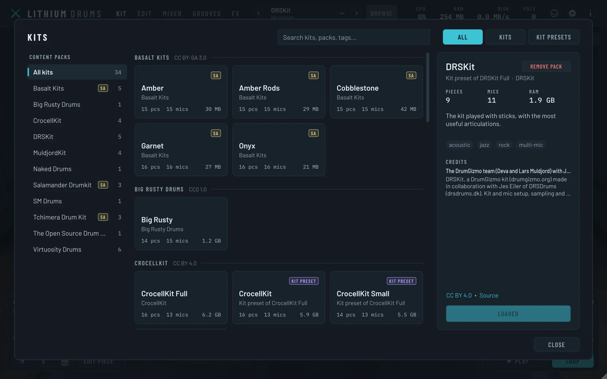

Real drums. Your e-kit. Free and open source.
A free, open-source acoustic drum sampler. Real multi-mic recordings of real kits, sound presets ready for a song, a mixer and effects to shape them, and 1,150 grooves played by human drummers, in your DAW or on its own.
VST3 · CLAP · AU · StandaloneLinux, Windows and macOS · GNU AGPLv3 · The sibling of Lithium Studio

See it, and hear it
A walk through every page: the stage, the kit browser, building your own kit from pieces of others, then shaping, mixing and playing grooves through it.
From the first hit to the final mix
Everything between hitting a pad and hearing a finished drum sound, and every bit of it is yours to change.
-
00Input
You play it
From an e-kit, a keyboard, your DAW, or one of 1,150 grooves played by real drummers. Every kit answers to the same MIDI map, so switching kits never changes what your notes play.
-
01Sample
A real drum answers
Recorded at many velocities with several takes of each, so no two hits sound quite the same. Big kits stream from disk: DRSKit plays in about 360 MB of RAM instead of 3 GB.
-
02Slot
From any kit you like
Every kit is the same grid of 24 slots. Swap in a snare from another kit, and “Ambience follows piece” brings its own overheads and room along with it.
-
03Mics
Heard by every mic
The close mic, the overheads and the room all hear it, and you set how much of each. A kit recorded without overheads or a room mic can have them emulated from its other mics.
-
04Shape
Shaped on its own
One drum at a time: how it responds to velocity, its tuning and a pitch bend on each hit, a tone filter, its envelope, and its own dynamics.
-
05Channel
Mixed like a session
Every drum gets its own channel, next to the overheads, the room, three effect returns and the master. Its EQ is drawn over a live spectrum of what it's playing.
-
06Returns
Sent into a room
Three returns every channel can send to: a convolution room with five spaces (one of them a real, measured seminar room), an algorithmic plate, and a delay that follows your tempo.
-
07Master
Glued on the bus
The whole kit runs through EQ, glue and crush compressors, tape saturation, a transient shaper and a limiter.
-
08Out
Into your song
As one stereo mix, or across sixteen stereo aux outs so each drum gets a track of its own. It adds no latency unless you switch on the limiter's 2 ms lookahead.
Don't want to set all of that yourself? A sound preset sets all of it in one click.
Twenty-one finished sounds
Each sound preset is a whole drum sound, ready for a song: a kit with its drums tuned and shaped, every channel EQ'd and compressed, the mics balanced and the effects and master bus set. Pick one and play, or start from it and make it yours.
-
Rock
Arena Thunder
Stadium rock: a punchy kick, a fat snare in a plate, long low toms and crushed room mics, glued and taped.
CrocellKit -
Rock
Garage Riot
Raw and trashy: everything a little driven, loud overheads, a snare that cracks, a concrete garage around it and a smashed bus underneath.
Big Rusty Drums -
Rock
Stone Hall
Seventies hard rock in a big hall: the open kick tuned down and tightened, maple toms tuned down and left to ring, a cracking snare, all on hot tape.
Tchimera Drum Kit -
Metal
Black Anvil
Tight double-kick metal: short kicks with all attack and no boom, a bright snare, cymbals kept out of the way.
MuldjordKit -
Metal
Forge Hammer
Modern metal: a clicky, short kick that cuts through guitars, a tight cracking snare, gated toms and the far rooms pulled out.
Naked Drums -
Studio
Glass Booth
Clean modern studio: every drum clear and even, a small treated room, a touch of plate on the snare.
MuldjordKit -
Studio
Session Gold
A polished, record-ready kit: a round kick, a snare with snap and body in a plate, controlled rooms and a gentle glue.
DRSKit -
Pop
Radio Shine
Pop-rock ready for the radio: a scooped, punchy kick, a bright snare in a short plate and a polished, glued bus.
SM Drums -
Pop
Sugar Rush
Bright, tight pop: a deep kick with a click, a tuned-up snare in a big plate with a dotted-eighth echo, sparkly hats.
Basalt Kits -
Funk
Motor City
Sixties soul: a short, damped kick, a tight snare tuned up with every ghost note heard, crisp hats and a small studio room, saturated on tape.
Tchimera Drum Kit -
Funk
Velvet Pocket
Dry and in the pocket: a short, dead kick, a cracking tuned-up snare, crisp hats and a small room, on tape.
Basalt Kits -
Jazz
Late Set
Sticks on a bop kit at the end of the night: small tuned-up drums, the ride up front and the vintage room mic warming it all.
Virtuosity Drums -
Jazz
Smoke & Brushes
Brushes in a small club: a high, open kick, wide dynamics, a warm room and nothing squashed.
DRSKit -
Vintage
Shag Carpet
The seventies, towels on every drum: dead, thuddy toms tuned low, a fat dark snare, no room at all, through a warm tape machine.
DRSKit -
80s
Neon Gate
The eighties power ballad: a huge, short hall on the snare and toms, toms that drop in pitch, tight dry cymbals.
CrocellKit -
Lo-Fi
Dusty Crates
A beat sampled off an old record: dull, short and a little detuned, saturated tape and a crushed bus.
Salamander Drumkit -
Acoustic
Campfire Circle
Unplugged percussion: a cajon with a round low end, congas and shakers in a small warm room.
Basalt Kits -
Acoustic
Porch Light
Rods for a quiet song: soft and warm, in a natural room, with the dynamics left alone.
Basalt Kits -
Indie
Thrift Store
A bedroom-indie kit off a four-track: slightly dull and driven, in a small reflective room.
The Open Source Drum Kit -
Blues
Juke Joint
A blues band in a small bar: warm and a little dark, the ride up front, the crashes pulled back and a natural room glued together gently.
Tchimera Drum Kit -
Americana
Dirt Road
Country and Americana, close and dry: a round kick, short toms, a snare with a natural plate on it and the cymbals kept polite.
Tchimera Drum Kit
Step through them
The preset menu sits in the middle of the header. The arrows either side step through every preset, so you can audition them while a groove plays.
Save your own
Change anything and an asterisk shows the sound has changed. Save as... keeps it as a .lithiumpreset file next to your kits.
Kit not installed?
A preset whose kit you haven't downloaded yet is greyed out in the menu, with the kit it needs and a link to its download.
Every page, up close
Click any screenshot to see it full size.

Build your own kit
Switch the Kit page to Slots and every kit becomes the same grid of 24 slots. Swap any piece for the same kind of piece from any kit you have installed.
- Fill empty slots with extra toms, cymbals or percussion
- "Ambience follows piece" brings its own overheads and room along
- Save the result as your own preset

Shape every drum
The Edit page works on one drum at a time: how it responds to velocity, its tuning, a tone filter, its attack, hold and decay, and its dynamics.
Its mics are drawn around a picture of the drum, so you set how much the close mic, overheads and room each hear it.

Mix it
Every drum gets its own channel, plus the overhead and room mics, three effect returns and the master.
- EQ drawn over a live spectrum of the channel
- Pan, stereo width and sends on every channel
- Sixteen stereo aux outs to give any drum its own DAW track

Add effects
Three returns every channel can send to, and a full chain on the master bus.
- Room: convolution, with a studio, a measured seminar room, a tiled room, a hall and a plate
- Plate: an algorithmic reverb
- Delay: synced to your project's tempo
- Master: EQ, glue and crush compressors, tape, transient shaper and limiter

Play grooves
1,150 recorded performances by real drummers, in styles from rock and funk to Latin, jazz and Afro-Cuban, cut into phrases and fills.
Click a tile to hear it on the loaded kit, in time with your project, then drag it onto a track to get its MIDI.

One map for every kit
Every kit plays from the same MIDI map, so switching kits never changes what your notes play.
- See what every note plays, and learn any articulation from a pad or key
- Velocity curves for the whole kit, each drum and each hit
- Each library's own map, General MIDI and e-kit maps too

Play it from an e-kit
The hi-hat follows the pedal continuously, with chicks and foot splashes, and snare, ride and tom hits follow positional sensing.
The E-Drums view calibrates the pedal and pads, with a monitor of the MIDI coming in. Maps for Roland V-Drums and Alesis kits are built in.

Find and download kits
The kit browser shows every kit and kit preset, searchable by name, style or tag, with each one's credits.
Libraries you haven't downloaded yet are there too, greyed out, with a Download button.
The best drums open source has to offer
Eleven of the finest free drum libraries ever recorded, from deep, multi-mic'd metal kits to jazz brushes, all playable in one place. Pick the ones that suit your music and download just those.
Only what you play
Each library is its own one-click download in the kit browser, ready to play when it finishes. Make metal? Grab Naked Drums and CrocellKit and skip the brushes.
Already have one?
LithiumImport <folder> converts a library you downloaded yourself. On the same drive the audio is hard-linked, so it takes no extra space.
Credit the authors
The kits' authors ask to be credited when you publish music made with them. The About dialog lists the credits of every installed pack.
1,150 grooves from Google Magenta
The grooves are the Groove MIDI Dataset from Google's Magenta project: real performances by real drummers, played through whichever kit you have loaded.
Played by professionals, on an e-kit
Magenta hired drummers, most of them professionals, and had them improvise to a click in a wide range of styles on a Roland TD-11 electronic kit. So every hit carries a real drummer's timing and dynamics, ghost notes and all.
Lithium Drums cuts each performance into phrases and fills. Click one to hear it in time with your project, then drag it onto a track to get its MIDI, written in whichever MIDI map you use.
- Afrobeat
- Afro-Cuban
- Blues
- Country
- Dance
- Funk
- Gospel
- Highlife
- Hip-hop
- Jazz
- Latin
- Middle Eastern
- New Orleans
- Pop
- Punk
- Reggae
- Rock
- Soul
The Groove MIDI Dataset is by Jon Gillick, Adam Roberts, Jesse Engel, Douglas Eck and David Bamman (“Learning to Groove with Inverse Sequence Transformations”, ICML 2019), made available by Google under CC BY 4.0. The Grooves tab downloads it for you (3 MB), and the About dialog credits its drummers. More about the dataset.
Get Lithium Drums
Free for Linux, Windows and macOS. Each installer lets you pick the standalone app and the plugin formats you want. Portable zips for Windows and Apple Silicon Macs are on the release page.
-
Install
Pick the standalone app and the plugin formats you use. Run the Linux installer again to update or remove it.
-
Open it
Launch the app, or rescan plugins in your DAW and add Lithium Drums to an instrument track.
-
Get a kit
Press Browse in the header and download a kit. For rock, start with CrocellKit or Naked Drums.
Early software. Everything works, but expect rough edges and changes before 1.0. The installers aren't signed yet, which is why Windows and macOS warn you the first time.
Free software, built on generous work
Lithium Drums is free software under the GNU Affero General Public License v3. It stands on these projects, and on the drummers and engineers who gave their recordings away.
The kits are their authors', under the licences listed above. The full notices ship with every package as THIRD-PARTY-NOTICES.txt; the licence is in LICENSE.
Join in
Source code: github.com/thecalamityjoe87/LithiumDrums
Found a bug or have an idea? Open it on the Issues page.